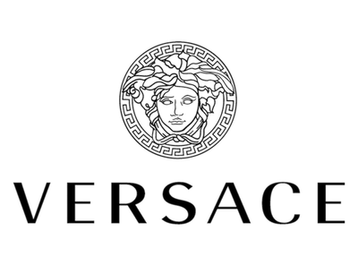
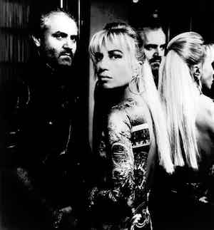

Gianni Versace debuted his own line in 1978 and soon became an international sensation.
Born in Reggio Calabria, Italy in 1946, founder Gianni Versace, the son of a respected dressmaker, emerged as a top designer on the Italian fashion scene in the mid 1970s, freelancing as a designer for Italian labels Genny, Callaghan, and Complice. Known for his knits, and later to gain notoriety for his edgy approach using materials like leather and lace, Gianni Versace debuted his own line in 1978 and soon became an international sensation.
In the fashion world, Gianni Versace is credited with being the first to blend fashion and Rock & Roll, influencing pop culture with a force never seen before. Having been a costume designer for many years, Versace dressed top celebrity artists for stage, including Tina Turner, Elton John, and Madonna.
Gianni Versace and his sister Donetella Versace 1970